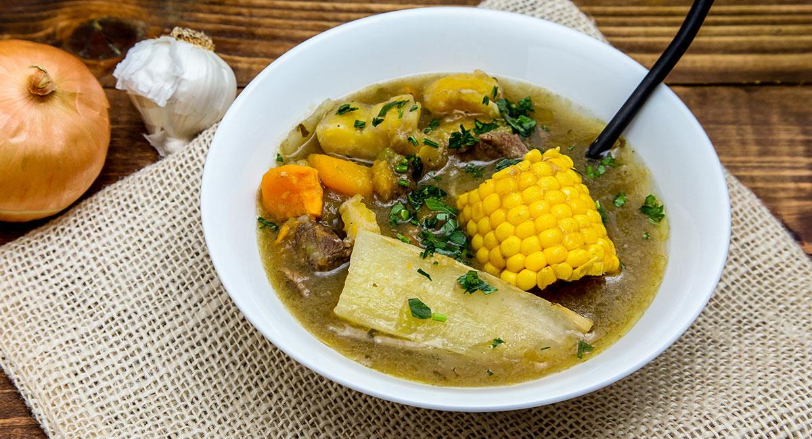

EL SANCOCHO COSTEÑO
El sancocho costeno es una variante regional del sancocho, un guiso tipico de la gastronomia latinoamericana que se prepara con diversos ingredientes, principalmente carnes y vegetales. La version costena se asocia con las regiones costeras de Colombia, donde se incorporan ingredientes locales y sabores caracteristicos de la region. Las variaciones de sancocho costeno pueden existir, pero tipicamente incluyen carne (como pollo, res o cerdo), platano, yuca, maiz y otros vegetales. El plato se cocina a fuego lento, permitiendo que los sabores se mezclen y los ingredientes se cocinen a la perfeccion. Cada region y cada cocinero puede tener su propia receta y toque personal para el sancocho costeno, por lo que los ingredientes especificos pueden variar. Este guiso es apreciado por su sabor abundante y reconfortante, y es una parte importante de la tradicion culinaria en la costa colombiana.
